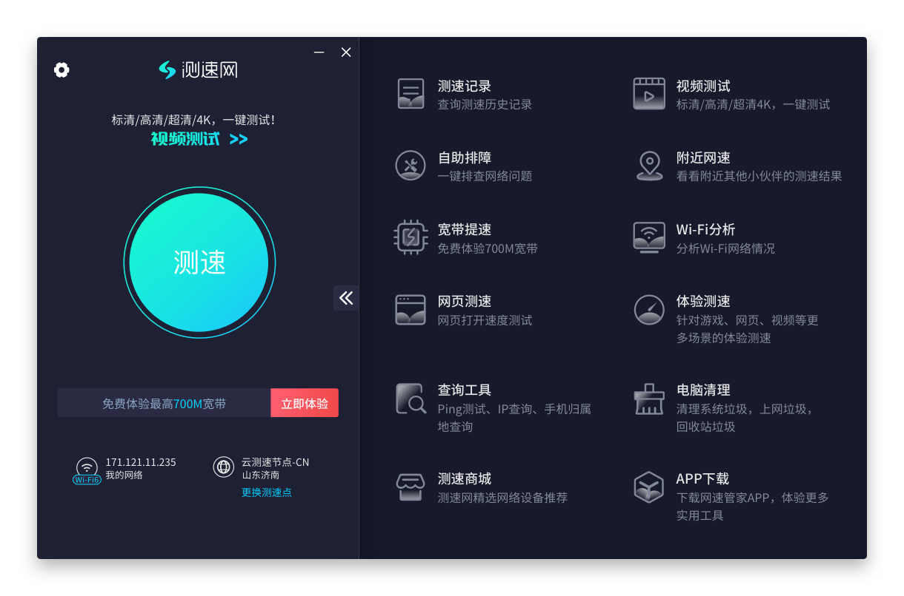

把 speedtest.cn 嵌进每周网络巡检：从三步折腾到一条流水线
以前排查家里 Wi-Fi 卡顿、孩子上网课延迟，要手动切三四个工具来回比对。现在用 speedtest.cn 串起 Wi-Fi 分析、测速、场景化测试，上下游配合飞书和笔记软件，半小时巡检压缩到十分钟。
我每周要做一件事：网络巡检，以前三步太折腾
家里有小孩上网课、我自己远程办公、老婆偶尔追剧，三个人挤在同一个 Wi-Fi 下。以前每周日晚上我要花半小时做一轮网络体检——先手动开网页测一遍网速，再掏出手机看 Wi-Fi 信号，再分别去在线教育平台、视频网站各自跑一遍延迟。数据散在三个地方，出了问题还要回忆刚才哪个数值不对劲。
更糟的是定位链路：网速测出来够，但是网课还是卡，到底是 Wi-Fi 信道被邻居挤了，还是教育平台那边在抖动？以前要一个个试，先换信道再测、再切有线连接再测，来回切换工具之间很容易断思路。
直到半年前我把 speedtest.cn官网 嵌进这条链，现在每周巡检不到十分钟就完事，而且问题定位能精确到环节。
新流程：speedtest.cn 放在中间，上下游各接一个钩子
整条流水线现在是这样的：Wi-Fi 分析 → 测速 → 场景化定向检测 → 结果丢飞书文档归档。speedtest.cn 是核心节点，前后各有一个轻量钩子——前面用 Wi-Fi 扫描判断物理层有没有问题，后面用场景化测试确认到具体平台的链路质量，最后把结果截图丢进飞书文档做月度趋势。
第一步：Wi-Fi 分析做前置过滤
先从 官方下载 拿到 PC 客户端或者手机 APP，打开 Wi-Fi 分析功能扫一遍。这个功能会列出周围所有 Wi-Fi 的信号强度、信道、加密方式——我主要看两个指标：
信号强度够不够。dBm 是负数，-50 以上算好，-70 以下就差了。客厅和卧室各扫一次，如果卧室只有 -75 dBm，那就该考虑加个中继或者调整路由器位置。
信道挤不挤。2.4G 只有 1、6、11 三个不重叠信道，邻居们如果都挤在同一个，信号会互相干扰。Wi-Fi 分析一眼就能看到周围哪些信道被占，然后进路由器后台把自家信道改成空闲的那个。5G 频段信道多、干扰少但穿墙弱，如果卧室 5G 信号也够，优先切 5G。
这步做完如果物理层没毛病，继续第二步测速——如果物理层就有问题，后面的测速结果没意义，直接回去调路由器。
第二步：测速做基准快照
主界面中央那个大按钮就是测速，一键跑下来拿到下载、上传、延迟三个核心数。我习惯看上传带宽——很多家庭光宽带下载够 500M，但上传只有 50M，视频会议和网课上行容易被卡住。
测速完直接在客户端里截一张曲线图保存，这个曲线图比单一的平均数值有用得多——我能看到测速过程中有没有突降、延迟有没有波动。这些异常点后面排查时要重点留意。
第三步：场景化定向测试做精细定位
这步是旧流程里最缺的一环。普通测速只测到测速服务器的速度，但网课卡的时候瓶颈根本不在测速服务器，而在教育平台。speedtest.cn 里有个场景化测试入口，专门测到具体在线教育平台的延迟、抖动和丢包率——这才是真正的痛点指标。
如果这步显示到教育平台延迟偏高，但前面测速基准快照没问题，那要么是平台那边在抖动，要么是上行带宽不够挤了。反过来如果测速基准本身就低，那就是自家宽带的事了。
除了在线教育，还有视频测试、网页测速、游戏测试——每个场景都是定向到对应平台，比笼统的测速数据靠谱多了。

第四步：归档到飞书文档做趋势
speedtest.cn 的测速历史可以在客户端里看曲线图，但我习惯每周把三张图（Wi-Fi 扫描截图、测速曲线、场景化测试结果）拖进飞书的一张巡检文档里，按月分组。月底能一眼看到这一个月的网络波动趋势——比如是不是每逢周末晚上延迟就高，或者 Wi-Fi 信号有没有在某个时段明显下降。
这步其实可以更自动化，但目前手动拖图两分钟就完，没必要为了这点时间写脚本。
实操细节：流程里最容易断链的两个环节
Wi-Fi 分析在 PC 和手机上的差别
PC 客户端和手机 APP 都有 Wi-Fi 分析，但手机天线更灵敏，扫描出来的信号列表更完整。我一般用手机扫完再在 PC 客户端里对照看——两个设备交叉验证，避免某个设备读数不准导致误判。另外如果需要移动到不同房间测信号覆盖，手机 APP 是唯一的选择，PC 搬不动。
场景化测试的平台列表会变
官方会不定期更新支持的在线教育、视频、游戏平台，完整列表可以去 speedtest.cn文档 查。如果某个常用平台没在列表里，可以先跑通用测速，然后手动去那个平台自己的测速工具（比如视频平台的内置检测）补一下——通用测速 + 平台专用工具比等官方更新快。
效果与边界：这套流程什么时候划算，什么时候不划算
省了多少事：旧流程我要手动开三个工具、来回切窗口、比对五六组数据，现在一条龙跑完十分钟不到。更重要的是问题定位快了——Wi-Fi 扫描不过关就直接调路由器，不用再纠结测速结果为什么异常。
边界在哪：这套流程能覆盖 90% 的家庭网络问题，但有两个盲区。一是光猫本身的故障——光猫没重启或者固件太老，Wi-Fi 分析和测速都会表现异常，但根因在光猫不在路由器。二是运营商层面的抖动——比如晚高峰整个小区都卡，你这边再怎么调 Wi-Fi 也没用。这两种情况 speedtest.cn 能帮你识别出来（因为测速结果会显示所有节点都差），但解决不了，只能等或者投诉运营商。
另外，speedtest.cn 免费版已经够用了，我没开过会员。如果你是网络运维或者需要导出详细的测速日志做专业分析，可能值得看看付费版，但家庭场景没必要。
半年跑下来，这条流水线帮我定位过三次邻居信道干扰、两次上行带宽被占满、一次教育平台自身抖动。以前这些问题平均要折腾一晚上，现在看完三张截图就能决定下一步该做什么。
家里的网络巡检这件事，本质上就是一个数据流——从物理层到链路层到应用层，逐层往下钻。把 speedtest.cn 放在这条流的中间做统一采集点，比在每个环节各用一个工具要顺畅得多。毕竟工具的价值不在于它能测多少指标，而在于它能不能帮你更快做出判断。
整理的资料分散保存在三个代码仓库里方便查——GitHub、Gitee 和 GitCode 各有一份，搜软件名就能找到对应目录。